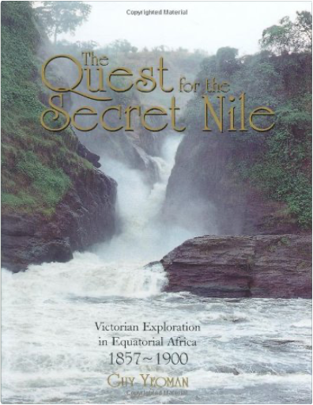

The Once and Future King, Complete EditionT H White The Once and Future King, Complete EditionT H White  The extraordinary story of a boy called Wart — ignored by everyone except his tutor, Merlin — who goes on to become King Arthur.  Slow Cooker: Easy and Delicious Recipes for All SeasonsSally Wise Slow Cooker: Easy and Delicious Recipes for All SeasonsSally Wise Sally Wise owns two crock pots and three slow cookers. At this very moment there is probably a pot of something delicious on her kitchen bench, slowly cooking itself to perfection — to say that she is passionate about this style of cooking would be an understatement. In SLOW COOKER, the bestselling author of A YEAR IN A BOTTLE shares her favourite slow cooker recipes. Drawn from a collection created over thirty years of preparing tasty, economical and nutritious meals for her family, they include soups, mains — beef, lamb, chicken, pork and vegetables — and delectable desserts. Sally believes that a slow cooker should be among the kitchen tools of every budget-conscious or busy person. These mouthwatering and easy-to-follow recipes will make slow cooking a cinch, all year round. A Year In A Bottle: Preserving and Conserving Fruit and Vegetables Throughout the YearSally Wise Zesty yet simple raspberry jam on steaming fresh scones from the oven; tasty pickles, relishes and chutneys to complement roasts; and plump, tasty pickled onions and sumptuous fruit cheeses for the cheese platter ... just a small taste of what readers will find in Sally Wise's wonderful preserving cookbook. Containing a lifetime of passion and preserving wisdom, A YEAR IN A BOTTLE is an inspiring and practical collection of more than 100 recipes and hints for making your own glorious jams, jellies, marmalades, drinks, pastes, fruit cheeses, chutneys, relishes and pickles. Includes easy and simple recipes, technical advice and helpful hints from selecting ingredient to safety tips to ensure success. Australia's WestRichard Woldendorp This updated edition of Richard’s most impressiveand sought-afterhardcover photographic book showcases the beauty and drama of the vast Western Australian landscape. The Quest For The Secret Nile: Victorian Exploration in Equatorial Africa 1857-1888Guy Yeoman The Nile, stretching for a distance of 4,163 miles, is the longest river in the world. The ancient Greeks were obsessed by the provenance of so much water, feeding a river that flowed out of the desert. Aeschylus, in 500 BC, talked of Egypt being nurtured by the snows. For centuries, the only sporadic reports from the heart of equatorial Africa came from Arab seafarers, land travellers and slavers. In the mid-1850s in Britain, the great thirst for adventure and discovery, combined with the challenge posed by the ancient riddle of the secret sources of the Nile and acted like a magnet on men such as Sir Richard Burton, Captain Hanning Speke, Samuel Baker, Dr David Livingstone and Henry Morton Stanley. This gripping account, illustrated with many prize-winning photographs, traces the tribulations and achievements of the men who walked in the footsteps of Herodotus and carried away the prize: the discovery of the sources of the Nile. Quantum Mechanics: Concepts and ApplicationsNouredine Zettili Quantum Mechanics: Concepts and Applications provides a clear, balanced and modern introduction to the subject. Written with the student’s background and ability in mind the book takes an innovative approach to quantum mechanics by combining the essential elements of the theory with the practical applications: it is therefore both a textbook and a problem solving book in one self-contained volume. Carefully structured, the book starts with the experimental basis of quantum mechanics and then discusses its mathematical tools. Subsequent chapters cover the formal foundations of the subject, the exact solutions of the Schrödinger equation for one and three dimensional potentials, time-independent and time-dependent approximation methods, and finally, the theory of scattering.  The Lucifer Effect: Understanding How Good People Turn EvilPhilip Zimbardo The Lucifer Effect: Understanding How Good People Turn EvilPhilip Zimbardo What makes good people do bad things? How can moral people be seduced to act immorally? Where is the line separating good from evil, and who is in danger of crossing it? |

 Made with Delicious Library
Made with Delicious LibrarySpringfield, State zipflap congrotus delicious library Doddridge, Edward